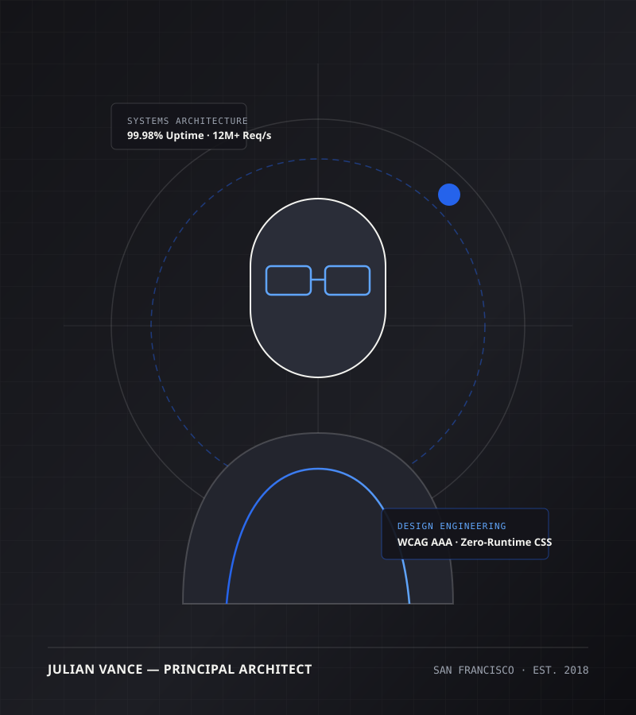

WebAssembly, Columnar Streams & CRDTs
Designing browser-native computation kernels in Rust and TypeScript that process hundreds of thousands of records off the main thread using Apache Arrow, IndexedDB, and conflict-free state replication.
I partner with engineering organizations to design and ship high-throughput WebAssembly runtimes, local-first collaborative engines, and WCAG AAA design systems that scale without runtime bloat.

Designing browser-native computation kernels in Rust and TypeScript that process hundreds of thousands of records off the main thread using Apache Arrow, IndexedDB, and conflict-free state replication.
Building deterministic AST token compilers and semantic HTML5/CSS3 component systems enforced by automated WCAG AAA contrast gates, full keyboard navigation, and sub-150ms interaction budgets.
Eliminating fragile third-party dependencies in favor of self-contained static deployments, precomputed search indices, and real-time network latency diagnostics.
“Before Julian re-architected our telemetry query layer into a Rust/WASM ring buffer, our incident responders faced 6-second UI freezes during peak traffic spikes. The Chronos engine dropped 99th-percentile query latency to 4.2ms and cut browser RAM usage by 64%.”
“Julian unified four fragmented frontend teams under the Aether Design System. By replacing our heavy runtime CSS-in-JS library with his static token compiler, our bundle size shrank by 92 KB and every single view passed external WCAG AAA audits on the first review.”